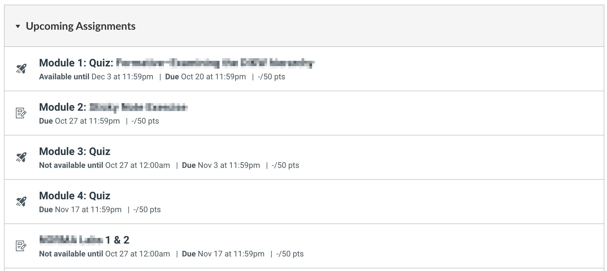
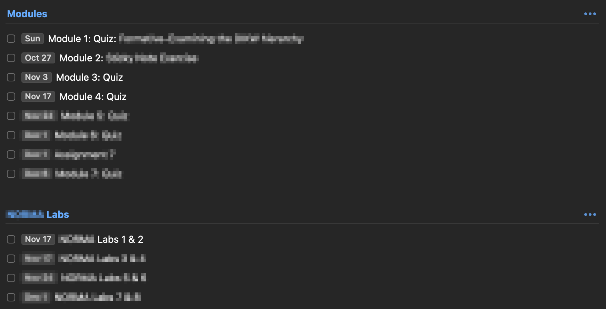
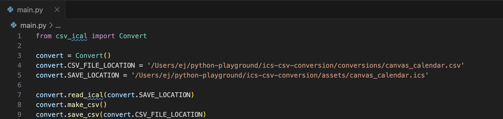
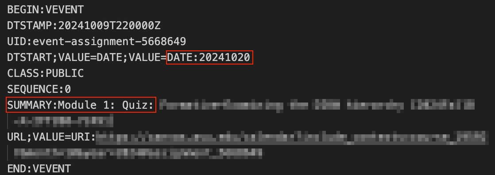
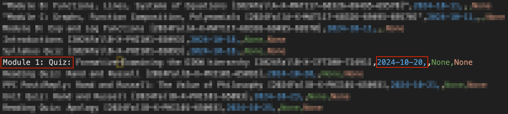
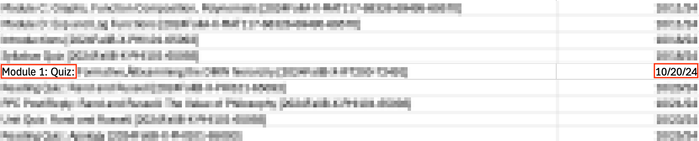

Canvas LMS -
From ICS to CSV to Things 3
Date: Oct 14, 2024
As always, these seemingly simple script ideas come from repeating the same action over and over to the point where I think, "Man, won't it just be easier if I try and make this a one-click process?" Famous last words...My task manager app of choice these days is Things 3. My college, like many others, uses the Canvas Learning Management System to help facilitate the and manage all of their learning materials and student interactions all in one place. This system offers a calendar subscription feed which is great to see all your due dates at a glance, but I would like an easier way to get all my assignments into my task management app in a format that works best for my brain.
My current method for doing this is to go into the assignment list page to manually copy and paste the name of the assignment along with the due date, and paste it ask a new task in Things.
My Canvas dashboard:  My Things dashboard: With multiple classes and varying amounts of assignments and quizzes, this has become a bit tedious and started to itch the part of my brain where I'm thinking that there has to be a more efficient way to do this. Here's my thought process of how I'm starting to go about making this happen:
- Since the calendar subscription file is in the .ics format (which is just plain text), I know that I need a script that can parse through and pull out the information that I deem necessary - only the name of the assignment/quiz and it's due date.
- I want to keep learning and understanding Python with small projects like these, so I'll go ahead and use this language.
- Instead of trying to re-invent the wheel from scratch, I found this awesome little GitHub repo - huge shout out to Albert Wang - that has an existing Python library for doing just this.
- Once I have all the information in a .csv file, I wonder if I can use a combination of a bash script and a Things 3 shortcut to get the required data into Things 3.
Using the existing Python library csv-ical
By utilizing Albert's existing Python library, I was successfully able to get the Canvas .ics subscription file into a usable .csv file.
Python script breakdown This imports the Convert class from the csv_ical module. The Convert class is responsible for handling the conversion between CSV and iCal files.
from csv_ical import Convert An instance of the Convert class is created and stored in the variable convert. This instance will be used to call the methods and access the properties of the Convert class for handling file conversion.
convert = Convert() This sets the CSV_FILE_LOCATION property of the convert object. It specifies the file path where the CSV file that needs to be created or used is located.
convert.CSV_FILE_LOCATION = '/Users/ej/python-playground/ics-csv-conversion/conversions/canvas_calendar.csv' This sets the SAVE_LOCATION property, specifying the location where the iCal file (canvas_calendar.ics) is located or where it will be saved after conversion.
convert.SAVE_LOCATION = '/Users/ej/python-playground/ics-csv-conversion/assets/canvas_calendar.ics' This method call instructs the convert object to read the iCal file from the path specified by convert.SAVE_LOCATION - loading the iCal data from the canvas_calendar.ics file.
convert.read_ical(convert.SAVE_LOCATION) After reading the iCal file, this method generates a CSV representation of the iCal data. It converts the iCal format to CSV, but it doesn’t save it to a file yet.
convert.make_csv() The final line saves the CSV file to the specified location, which was set earlier by convert.CSV_FILE_LOCATION. The converted CSV data from the previous step is now written to /Users/ej/.../canvas_calendar.csv.
convert.save_csv(convert.CSV_FILE_LOCATION) Calendar .ics Text File
You can see that when we look at a single calendar event in this text file, there's the name of the assignment appended after "Summary" and the relating due date appended after "DTSTART".
CSV and Excel View After Conversion
After running the Python script on the .ics file, we can see the name of the assignment and it's related due date in a .csv format.
When opening the .csv file in Microsoft Excel we have a bit easier of a view of seeing the same information.
